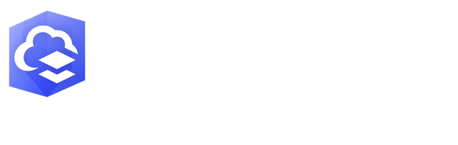
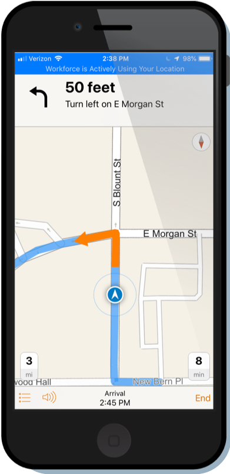
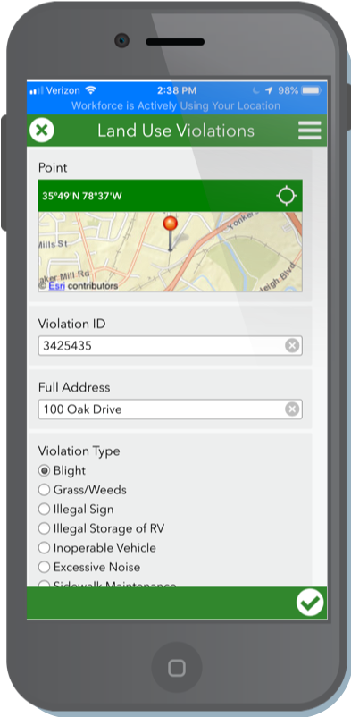
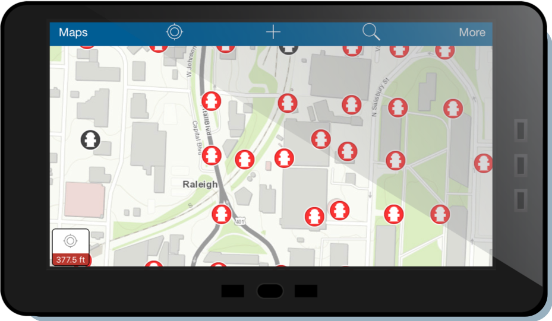
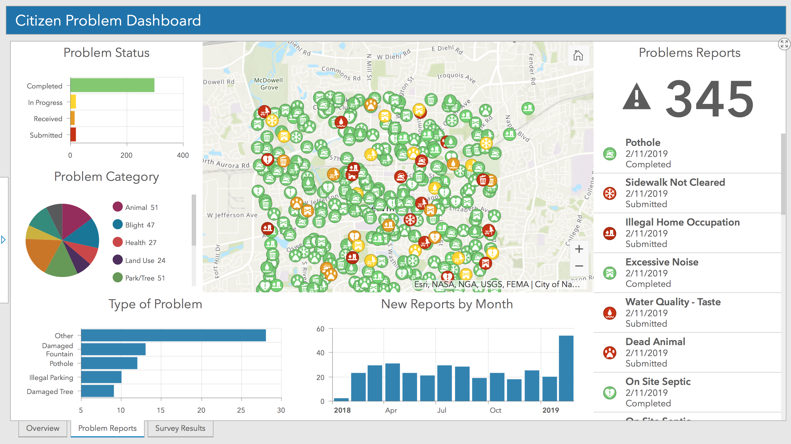

Esri Capabilities
### Geospatial Platform <img width="75%" src="https://trello-attachments.s3.amazonaws.com/5b102b5cfab11eb264dfd1ea/5ba155765fc3da6e435ef06e/39fb65746e9c8cdd8fc20a3ba86eb27a/Enterprise_Organizes.png">
### Geospatial Platform <img width="60%" src="https://trello-attachments.s3.amazonaws.com/5b102b5cfab11eb264dfd1ea/5ba155765fc3da6e435ef06e/x/c6743ab3a0008c50abe142adc1b4fb4a/Enterprise-Diagram.jpg"> 
### Geospatial Platform <img width="75%" src="https://trello-attachments.s3.amazonaws.com/5b102b5cfab11eb264dfd1ea/5ba155765fc3da6e435ef06e/5a8ac80915186fb2b4aa7bfe6ab43cd4/Enterprise_Anywhere_Anytime_Anydevice.png">
### Capabilities - Solutions - [Solutions for Local Government](https://solutions.arcgis.com/#Local%20Government) - [Capital Improvement](https://trello.com/c/OsoHsEUA/216-capital-improvement-plan) - [Emergency Management](https://solutions.arcgis.com/#Emergency%20Management) <img width="25%" style="background:none; border:none; box-shadow:none;" src="img/img/transportation.png">
### Takeaways - Solutions - Quickly address challenges - Free and Open Source - Supported by ESRI - Updated as tech moves forward <img width="50%" src="https://trello-attachments.s3.amazonaws.com/5b7b1a74ef82560323aabb84/5b7b1a74ef82560323aabb99/x/24e3b2317911ee3483524ea1ebc51d33/Screen_Shot_2018-07-31_at_3.54.14_PM.png">
### Capabilities - Mobile - [Workforce for ArcGIS](https://workforce.arcgis.com/projects/4168c2e9310b4fc982ee9b052d5a8379/dispatch/assignments) - [Hydrant Dashboard](http://ourcityc.maps.arcgis.com/apps/opsdashboard/index.html#/11c940576e84461a886b2a520aee9505) - [Code Enforcement Dashboard](http://ourcityc.maps.arcgis.com/apps/opsdashboard/index.html#/36549b43b8c84e499345eba15ea314db) <img width="35%" src="img/img/FieldOpsWorkflow.png"> <img width="120px" style="background:none; border:none; box-shadow:none;" src="img/img/workforce.png"> <img width="120px" style="background:none; border:none; box-shadow:none;" src="img/img/workforce2.png">   <img width="120px" style="background:none; border:none; box-shadow:none;" src="img/img/explorer.png">
### Capabilities - Mobile - Coordinate dispatch and field crews - Find work locations efficiently - Access digital maps - Replace paper forms - High accuracy data capture in the field - Real time dashboards - Work offline  <img width="420px" style="background:none; border:none; box-shadow:none;" src="img/img/dashcomp.png">
### Capabilities - Analytics - Crime Analysis <!--- [3D Space Time Cube](https://eath.maps.arcgis.com/apps/Cascade/index.html?appid=9a27635635c940539b96fb5ef954e4d5)--> - Dashboards - [Citizen Problem Reporter Dashboard](http://links.esri.com/localgovernment/tryit/CitizenProblemDashboard/) - [Damage Assessment](https://www.arcgis.com/apps/opsdashboard/index.html#/d39e40c478d142c4a136cee4cb0ea676) - [Incident Status](https://www.arcgis.com/apps/opsdashboard/index.html#/d797efadb09f455a9a7e3987112ccf84) - [Daily Activity](http://www.arcgis.com/apps/opsdashboard/index.html#/3dee80e1235b40b9b2ee02c79dfb9692) - [Chief's Dashboard](https://arcgisforfire.maps.arcgis.com/apps/opsdashboard/index.html#/77b99ba431e84e029eac126c80287dc6) - [CAD DAshboard](https://arcgisforfire.maps.arcgis.com/apps/opsdashboard/index.html#/c28c3e1314fb4c2bbf3f6b13e440ea29) - [Solution Dashboards](https://solutions.arcgis.com/gallery/#s=0&md=products-or-applications:Operations%20Dashboard%20for%20ArcGIS)
### Takeaways - Analytics <img width="30%" style="background:none; border:none; box-shadow:none;" src="img/img/analytics.png">  <img width="30%" src="img/img/InsightsCobb.png"> - Exploratory Spatial Analysis - Visual, Intuitive, Dynamic, User Friendly - Fast Analysis - Key Performance Indicators (KPIs) - At-A-Glance Decision Making
### Capabilities - Engagement - [Oak Hill City Council](https://gis-cityoh.opendata.arcgis.com/pages/city-council) - [City of Raleigh Open Data](http://data-ral.opendata.arcgis.com/) - [City of Raleigh Strategic Plan](http://strategicplan.raleighnc.gov/) - [Emergency Management Hub](https://emergency-management-preparedness-workshop-ourcityc.hub.arcgis.com/) <img width="50%" src="img/img/Hub-Picture-Emergency.png">
### Takeaways - [Engagement](https://trello.com/b/svnPco0J/hub-story) - Data Driven - [Initiative Focus](https://hub.arcgis.com/admin/initiatives/gallery) - Community Engagement - Internal Collaboration
### Enabling Capabilities <img width="75%" src="img/img/SmartCapabilitiesNoProduct2.png">